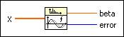
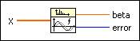
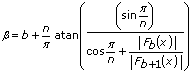
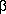

Buneman Frequency Estimator VI
Owning Palette: Spectral Analysis VIs
Requires: Full Development System
Estimates the frequency of a given sine wave of unknown frequency using the Buneman formula.

 Add to the block diagram Add to the block diagram |
 Find on the palette Find on the palette |
Owning Palette: Spectral Analysis VIs
Requires: Full Development System
Estimates the frequency of a given sine wave of unknown frequency using the Buneman formula.

| Add to the block diagram |
Find on the palette |
 |
X is the sampled signal at consecutive times. |
 |
beta is the estimation of the frequency of the sine wave that X represents. beta is the index of the maximum frequency and can be a noninteger. The following equation describes the actual frequency:
beta * df = beta * fs/number of samples |
 |
error returns any error or warning from the VI. You can wire error to the Error Cluster From Error Code VI to convert the error code or warning into an error cluster. |
If an underlying time signal is not exactly periodic with period n, where n denotes the size of the data array, you can use the Buneman algorithm to calculate the unknown frequency
0  f0 f1 f2 f3< 0.5fs.
f0 f1 f2 f3< 0.5fs.
The following formula describes the Buneman algorithm:

where Fb denotes the value of the Fourier transform of the signal X at the frequency b. You can determine the value of b using the greatest value of |Fb(X)|.
The formula for  is exact for pure sine waves and a good estimation in all other cases.